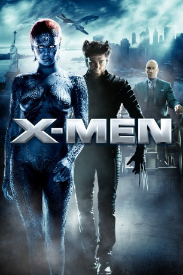
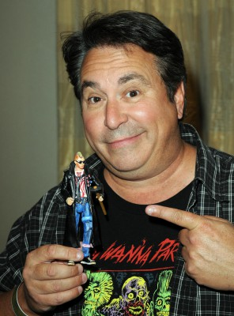

#728 X-Men 1
 
 IMDB-Wertung: 7.4 / 10
IMDB-Wertung: 7.4 / 10  Metascore: 64
Metascore: 64 
Die Ausreißerin Rogue, die aufgrund ihrer wachsenden Mutantenkräfte, nämlich die Fähigkeit, durch Berührung die Persönlichkeiten, Erinnerungen und Kräfte anderer Menschen kurzzeitig zu absorbieren, von zu Hause weggelaufen ist, trifft bei ihrer Flucht in Kanada auf den Einzelgänger Logan, der geschärfte Sinne und die Fähigkeit besitzt, eigene Verletzungen in Sekunden zu heilen. Dazu ist sein Skelett vollständig mit einem schier unzerstörbarem Metall (Adamantium) überzogen und mit sechs ausfahrbaren Klauen bewaffnet; Logan kann sich aber nicht erinnern, wann und wo sein Skelett derart behandelt worden ist, noch hat er irgendeine Erinnerung an seine eigene Vergangenheit.
Jahr: 2000
Dauer: 104 Minuten
FSK: 12
Land: USA Studio: 20th Century FoxTonspuren: DTS - ,
Untertitel: Deutsch,
Auflösung: 1080p (1920x816) Größe: 7454 MB
Genre: Action, Abenteuer, Sci-Fi
Regisseur:  Bryan Singer
Bryan Singer
Drehbuch: Tom DeSanto, Bryan Singer, David Hayter
Soundtrack: Michael Kamen
Darsteller:
 Hugh Jackman als Logan / Wolverine
Hugh Jackman als Logan / Wolverine Patrick Stewart als Professor Charles Xavier
Patrick Stewart als Professor Charles Xavier Ian McKellen als Eric Lensherr / Magneto
Ian McKellen als Eric Lensherr / Magneto Famke Janssen als Jean Grey
Famke Janssen als Jean Grey James Marsden als Scott Summers / Cyclops
James Marsden als Scott Summers / Cyclops Halle Berry als Ororo Munroe / Storm
Halle Berry als Ororo Munroe / Storm Anna Paquin als Rogue
Anna Paquin als Rogue Tyler Mane als Sabretooth
Tyler Mane als Sabretooth Ray Park als Toad
Ray Park als Toad Rebecca Romijn als Mystique
Rebecca Romijn als Mystique Bruce Davison als Senator Kelly
Bruce Davison als Senator Kelly- Matthew Sharp als Henry Gyrich
- Brett Morris als Young Magneto
 Shawn Roberts als Rogue's Boyfriend
Shawn Roberts als Rogue's Boyfriend John Nelles als Rogue's Father
John Nelles als Rogue's Father- George Buza als Trucker
- Carson Manning als Waterboy #1
- Scott Leva als Waterboy #2
 Aron Tager als Emcee
Aron Tager als Emcee Kevin Rushton als Stu
Kevin Rushton als Stu Doug Lennox als Bartender
Doug Lennox als Bartender- Sumela Kay als Kitty Pryde / Shadowcat
 Shawn Ashmore als Bobby Drake / Iceman
Shawn Ashmore als Bobby Drake / Iceman- Daniel Magder als Boy on Raft
- Matt Weinberg als Tommy
 Stan Lee als Hot Dog Vendor
Stan Lee als Hot Dog Vendor- Adam Robitel als Guy on Line
- Ben Jensen als Sabretooth Cop
- Elias Zarou als U.N. Secretary General
- David Hayter als Museum Cop
 Jay Yoo als Translator
Jay Yoo als Translator- Cheryl De Luca als Mother on Train , uncredited
- Gary Goddard als Man at Beach , uncredited
- Cyprian Lerch als Police Officer , uncredited
-  Brian Peck als Hot Dog Stand Patron , uncredited
- Daniel Vivian als Canadian , uncredited
- Rhona Shekter als Magneto's Mother
- Kenneth McGregor als Magneto's Father
- Donna Goodhand als Rogue's Mother
- Darren McGuire als Contender
- David Nichols als Newscaster #1
- Malcolm Nefsky als Stu's Buddy
- Katrina Florece als Jubilation Lee / Jubilee
- Alex Burton als John Allerdyce / Pyro
- Quinn Wright als Lily Pond Kid
- Madison Lanc als Tommy's Sister
- Marsha Graham als Newscaster #2
- Amy Leland als Cerebro
 David Brown als Lead Cop
David Brown als Lead Cop- Tom DeSanto als Toad Cop
Datei: X:\Comic-Filme\X-Men\X-Men 1 (2000, FSK12, 1920x816).mkv seit 16.03.2015
Festplatte: Comicverfilmungen+MusikCD
 Es gibt insgesamt 17 Filme in der Gruppe 'Comic-Filme\X-Men'
Es gibt insgesamt 17 Filme in der Gruppe 'Comic-Filme\X-Men'